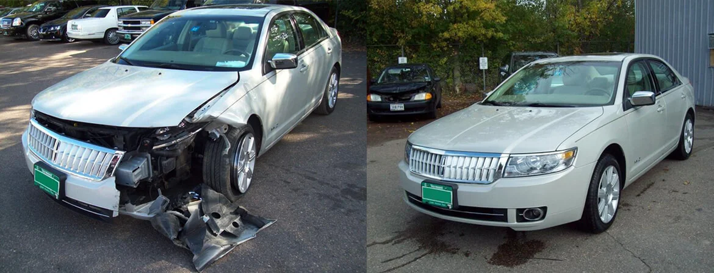
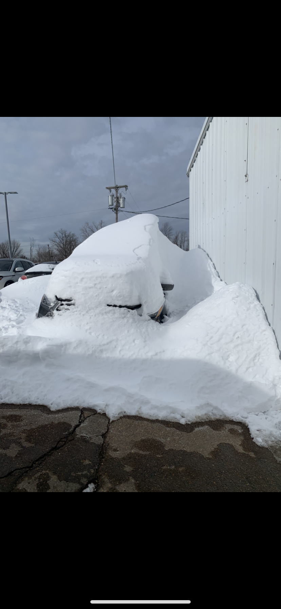
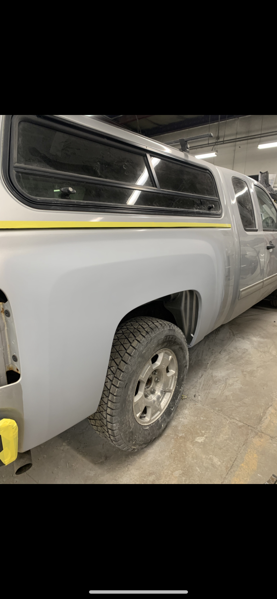
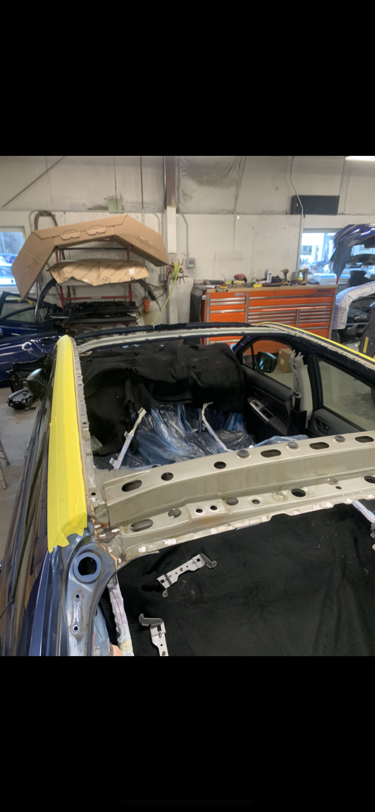
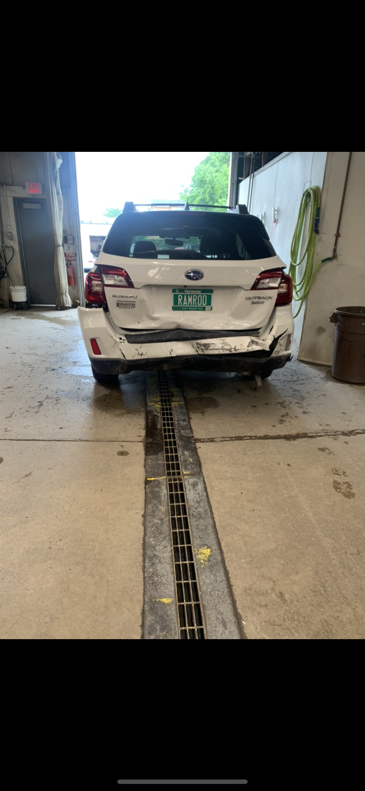

To book your free estimate call 1-
802-864-0011
When an accident happens, We’ll deal With your insurance company directly
Click here for directions Whether a fender-bender or a major collision, being in a car accident is a traumatic experience.You need help from someone you can trust. There is much to do to repair and restore your vehicle. Let Shearer Autobody take the worry out of this stressful time. Count on Shearer Autobody
Vermont car owners and mechanics have relied on Shearer Autobody’s team for collision assistance, repair and restoration for more than 30 years. Shearer Autobody’s specialists have training and experience with all makes and models of automobiles, foreign and domestic. Insurance providers consistently rank Shearer Autobody #1 for service, quality and dependability. The collision center has onsite mechanical support from Shearer Autobody’s full service garage for your car’s engine, transmission and electronics needs
   